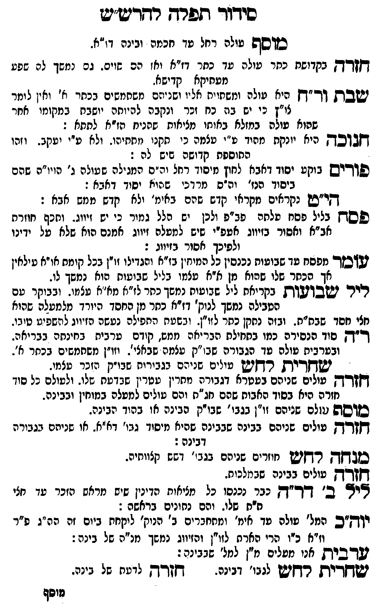

Neue Klartextfassung
■ מוסף ■ [עולה רחל עד חכמה ובינה דז"א.] ■ חזרה ■ [בקדושת כתר עולה עד כתר דז"א והן שוים. גם נמשך לה שפע מעתיקא קדישא.] ■ שבת ור"ח ■ [היא עולה ומשתוית אליו ושניהם משתמשים בכתר א' ולכן נאמר לז"ן כי יש בה כח זכר ונקבה להיותה יושבת במקומו ואחר שאלה עולה במהלך מוחי מלכות דאימא סוד נקבה לנצח:[?]] ■ חנוכה ■ [רחל יונקת מהוד ע"י עצמה כי תקנו מתתיהו. ולא ע"י יעקב. וזהו תוספת קדושה שיש לה:] ■ פורים ■ [נוק' יסוד דאבא לחוץ מיסוד רחל וה"ס המגילה שעולה ג' הויו"ת שהם ביסוד אבא וה"ס מרדכי שהוא יסוד דאבא:] ■ הי"ט ■ [נקראים מקראי קדש שהם באימ' ולא קדש ממש אבא:] ■ פסח ■ [בליל פסח מלכות פב"פ ולכן יש הלל גמור כי יש זיווג. ותכף חוזרת אב"א ואסור בזיווג לפע"ד שיש למעלה זיווג להכניס מוח אבא על ידינו ולפיכך אסור בזיווג:] ■ עומר ■ [מפסח עד שבועות נכנסין כל המוחין בז"א והגדילו זו"ן בכל קומתם או"א עלאין אך הכתר שלו שהוא מן א"א עצמו בליל שבועות שאז נמשך לו.] ■ ליל שבועות ■ [בקריאת ליל שבועות נמשך כתר לז"א מא"א עצמו. ובבוקר עם הטבילה נמשך לנוק' ז"א כתר מן החסד היורד מלמעלה שהוא חצי חסד שבת"ת. ובזה נתקן כתר לזו"ן. ובשעת התפילה נעשה הזיווג להשפיע ממנו.] ■ ר"ה ■ [סוד הנסירה כמו בתחילת הבריאה ממש, קודם ערבית בחינתה בבריאה. ובערבית עולה עד הגבורות שב"ק פנימי' דחיצו'. וזו"ן משתמשים בכתר א'.] ■ שחרית לחש ■ [עולים שניהם בגבורות שב"ק הזכר עצמו.] ■ חזרה ■ [עולים שניהם במעלה הגבורה מתרין פרקין שבדרועא שלו. ולעולם כל סוד תורה הוא בסוד האבות שהם חג"ת והם עולים למעלה במוחין דבינה.[?]] ■ מוסף ■ [עולים שניהם זו"ן בגבו' שב"ק דבינה אז בסוד הבינה.] ■ חזרה ■ [עולים שניהם בבינה שבבינה שהיא מיסוד גבו' דא"א. אז שניהם בגבורה דבינה:] ■ מנחה לחש ■ [חוזרים שניהם בגבו' שהם קלושותיה.] ■ חזרה ■ [עולים בבינה שבמלכות.] ■ ליל ב' דר"ה ■ [כבר נכנסו כל מציאות הדינין שיש מראש הזכר עד חצי ת"ת שלו. והם נתונים בראשה:[?]] ■ יוה"כ ■ [המל' עולה עד האי' ומתעטרים ב' נוק' לקחת ביום זה הה"ג ע"י ז"א כ"ז כדי לתתם לזו"ן והזיווג נמשך מאו"א של בינה:] ■ ערבית ■ [הן עולים מ"ן למל' דבינה:] ■ שחרית לחש ■ [לגבו' דבינה.] ■ חזרה ■ [לדעת של בינה.]
Original gegen neue OCR · Niqqud für Vergleich ausgeblendet
Original
■ מוסף ■ [עולהK007-001 רחל עד חכמה ובינה דז"א.] ■ חזרה ■ [בקדושת כתרK007-002 עולה עד כתרK007-003 דז"א והןK007-004 שוים. גם נמשך לה שפע מעתיקא קדישא.] ■ שבת ור"ח ■ [היאK007-005 עולה ומאירים עליה ושניהם משתמשים בכתרK007-006 א' ולכן נאמר לז"ןK007-007 כי יש בה כח זכר ונקבה להיותה יושבת במקומו ואחר שאלהK007-008 עולה במהלך מוחי מלכות דאימא סוד נקבה לנצח:] ■ חנוכה ■ [רחלK007-009 יונקת מהוד ע"י עצמוK007-010 כי תקנו מתתיהו.K007-011 ולא ע"יK007-012 יעקב. וזהו מתוספתK007-013 קדושה שיש לה:] ■ פורים ■ [נוק'K007-014 יסוד דאבא לתוך יסודK007-015 רחל וה"ס המגילהK007-016 שעולה ג' הויו"תK007-017 שהם ביסוד אבאK007-018 וה"ס מרדכי שהוא יסוד דאבא:] ■ הי"ט ■ [נקראיםK007-019 מקראי קדש שהם בחי'K007-020 ולא קדש ממש אבא:] ■K007-021 פסח ■ [בליל פסח מלכותK007-022 פב"פ ולכן ישK007-023 הלל גמור כי יש זיווג. ותכף חוזרת אב"א ואסור בזיווג לפע"דK007-024 שיש למעלה זיווג להכניס מוח אבאK007-025 על ידינו ולפיכך אסור בזיווג:] ■ עומר ■ [מפסחK007-026 עד שבועותK007-027 נכנסין כל המוחיןK007-028 בז"א והגדילו זו"ן בכל קומתם או"א עלאיןK007-029 אך הכתרK007-030 שלו שהוא מן א"א עצמו בליל שבועות שאזK007-031 נמשך לו.] ■K007-032 ליל שבועות ■ [בקריאת ליל שבועות נמשך כתרK007-033 לז"א מאו"אK007-034 עצמו. ובבוקר עםK007-035 הטבילה נמשך לנוק' ז"אK007-036 כתר מן החסד היורד מלמעלה שהוא חצי יסוד דבינה. וזהו מתן כתרK007-037 לזו"ן. ובשעת התפילהK007-038 נעשה הזיווג להשפיע ממנו.] ■ ר"ה ■ [סודK007-039 הנסירה כמו בתחילתK007-040 הבריאה ממש,K007-041 קודם מכניס בבינה כבריאה.K007-042 ובערבית עולהK007-043 עד הגבורות שב"ק פנימי' דחיצו'.K007-044 וזו"ן משתמשים בכתר א'.] ■ שחרית לחש ■ [עוליםK007-045 שניהם בגבורות שב"ק הזכר עצמו.] ■K007-046 חזרה ■ [עולים שניהם במעלה הגבורה מתרין פרקין שבדרועא שלו. ולעולם כל סוד תורה הואK007-047 בסוד תפילתK007-048 שהם חג"ת והם עוליםK007-049 למעלה במוחין דבינה.] ■ מוסף ■ [עוליםK007-050 שניהם זו"ן בגבו' שב"ק דבינה אז בסוד הבינה.] ■ חזרה ■ [עוליםK007-051 שניהם בבינה שבבינה שהיא מיסודK007-052 גבו' דא"א. אזK007-053 שניהם בגבורה דבינה:] ■ מנחה לחש ■ [חוזריםK007-054 שניהם בגבו' שהם קלושותיה.] ■ חזרה ■ [עוליםK007-055 בבינה שבמלכות.] ■ לילK007-056 ב' דר"ה ■ [כבר נכנסוK007-057 כל מוחיות הזכרין עם מוחם דזכרK007-058 עד חצי ת"תK007-059 שלו. והם גמורים במחשבה:] ■ יוה"כ ■ [המל'K007-060 עולה עד האי' ומתעטריםK007-061 ב' נוק' לקחתK007-062 ביום זה הה"ג ע"י ז"א כ"ז כדי לתתםK007-063 לזו"ן והזיווג נמשך מאו"אK007-064 של בינה:] ■ ערבית ■ [הן עולים מ"ן למל' דבינה:] ■ שחרית לחש ■ [לגבו' דבינה.] ■ חזרה ■ [לדעתK007-065 של בינה.]K007-066
OCR · fehlbar
סידוך תפרךץ רדדע"י2 כזוסש טולהK007-001 רחל עד חכמה ובינה דו"א. [[-ק- בקדושח כחרK007-002 עולה עד כחרK007-003 דז"א ואז הםK007-004 שוים. גם נמשך לה שפט מעחיקא קדישא. ושבק ו-"ךץ היאK007-005 עולה ומשחויח אליו (שניום משחמשים בכחרK007-006 א' ואין לומר צו"ץK007-007 כי יש בה כח זכר ונקבה להיותה יושבת במקומו אחר שהואK007-008 עולה במזלא באוחו מציאוח שהניח הו"א פתחא : דק[בדבך- היאK007-009 יונקת מחוד ט"י טצמהK007-010 כי תקנו מתחיהו.K007-011 ולא ע"זK007-012 יעקב. וזהו ל החוספחK007-013 קדושה שיש לה : פודיש בוקעK007-014 יסוד דאבא לחוץ מיודK007-015 רחל וה"ס המנילהK007-016 שעולה ג' הוי"הK007-017 שהם ביסוד הנז'K007-018 וה"ס מרדכי שיהוא יסיד דאבא : שי"ש נקראיםK007-019 מקראי קדש שהם באימ'K007-020 ולא קדש ממש אבא : פסדחץ בלילK007-021 פסח עלחהK007-022 פב"פ ולכן יש.K007-023 הלל גמור כי יש זיווג. ותכף חוזרת אב"א ואסור בזיווג אטפייK007-024 שיש למעלה זיווג אמנם הוא שלאK007-025 על ידינו ולפיכך אסור בזיוונ : שזסןך מפסחK007-026 עד שבועוחK007-027 נכנסין כל המיחזיןK007-028 בז"א והגדילו זו"ן בכל קומת אויא עילאיןK007-029 אך הכחרK007-030 שלו שהוא מן א"א עצמו בליל שבועות הואK007-031 נמשך לו. תיר ישבוגוות] בקריאתK007-032 ליל שגועות נמבך כחרK007-033 לז"א מא"אK007-034 עצמו. ובבוקר טםK007-035 הטבילה נמשך לנוק' דז"אK007-036 כתר מן החסד היורד מלמעלה שהוא חצי חסד שבת"ח. ובזה נחקן כחרK007-037 לזו"ן. ובשטח התפילםK007-038 נעשה הזיווג לתשפיש טיבו. "קץ סודK007-039 הנסירה כמו בחחילתK007-040 הבריאה ממש.K007-041 קודם ערביח בחינחה בבריאה.K007-042 ובערבית טולהK007-043 עד הגבורה שבו"ק עצמה שבאצי'.K007-044 וזו"ן משחמשים בכחר א - ישדק-יק רךקיש חילים שנירם בגבירוח שבו"ק הזנר טצמו. זקקךךק עיליםK007-045 שניהם בטטרא דגבורה מתרין טטרין שבדטח שלו. ולטולם בל סוךK007-046 חזרה היאK007-047 בסוד האבוחK007-048 שהם חג"ת והם טוליםK007-049 למעלה במוחין ובבינה. סקוסש גולםK007-050 שניהם וו"ן בגבי' שבו"ק הבינה או בהוד הבינה. דקדק עוליםK007-051 שניהם בבינה שבבינה שהיא מיסיךK007-052 גבו' דא"א. אוK007-053 שניהם בגבורה דבינה: בדק ר קיש חוזריםK007-054 שניהם בגבז' ושש קלוותיה. ד[("דץ עוליםK007-055 בבינה שבחלכות. צדיK007-056 ב' דד"ק נבר נכנפוK007-057 כל מציאות הדינין שיש מראש הזכרK007-058 עד חצי ח"תK007-059 שלו. והם נחונים בראשה : ין["ס המל'K007-060 עולה עד אימ' ומתחבריםK007-061 ב' הנוק' ליקחתK007-062 ביום זה הה"ג פ"ר ו"א כיו הרי הארתK007-063 לזו"ן והזיווג נמשך מנ"הK007-064 של בינה: עדביק אני מעלים חין לנל' שבבינה: שק-ית רחיש לנבו' דבינה. קן דק לדטחK007-065 של בינה. גוסףK007-066